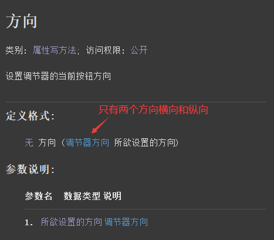
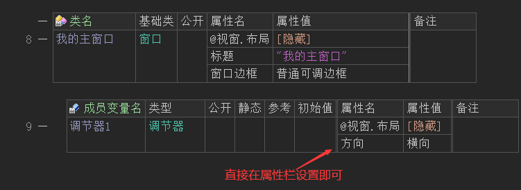
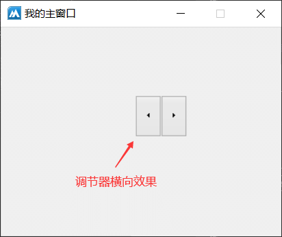
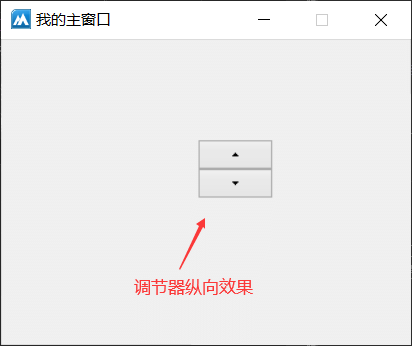
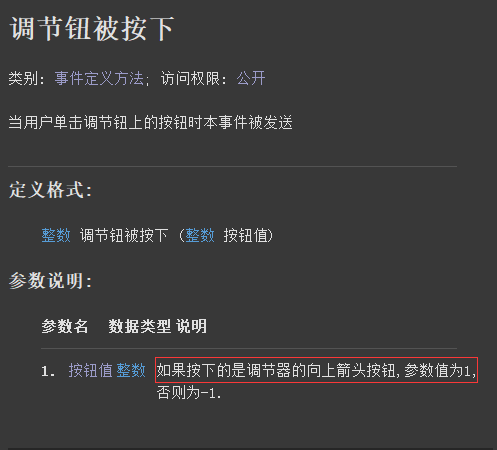
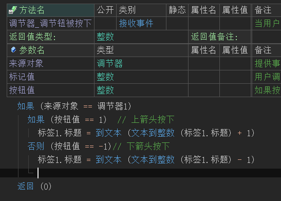
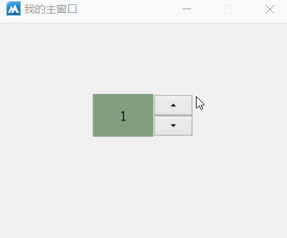

作者：创世魂
● 概述
本组件主要用于调节数据，通常需要配合“编辑框”或者“标签”组件使用。
注意：本组件虽然属于按钮类型组件，但是并未继承“按钮基础类”。
● 方向(写)
帮助文档如下图：
通过本属性可以设置调节器的显示方向。
共有两个方向“横向”和“纵向”。

代码编写如下图：
直接在组件变量的属性栏填写本属性并选择想要设置的属性值即可。

运行效果如下图：
调节器横向效果

调节器纵向效果

● 调节钮被按下(事件)
帮助文档如下图：
当调节器的按钮被按下时会触发本事件。
注意：当调节器方向为“纵向”时，“按钮值”参数返回1表示是上箭头按钮按下，否则表示下箭头。
当方向是“横向”时，则“按钮值”参数返回1表示是左箭头按下、否则是右箭头按下。

代码编写如下图：
添加“调节钮被按下”事件，并判断按钮值然后做出对应的数字加减操作，实现一个简单的数字选择器。

运行效果如下图：
最终可看到数字选择器可以正常使用。
